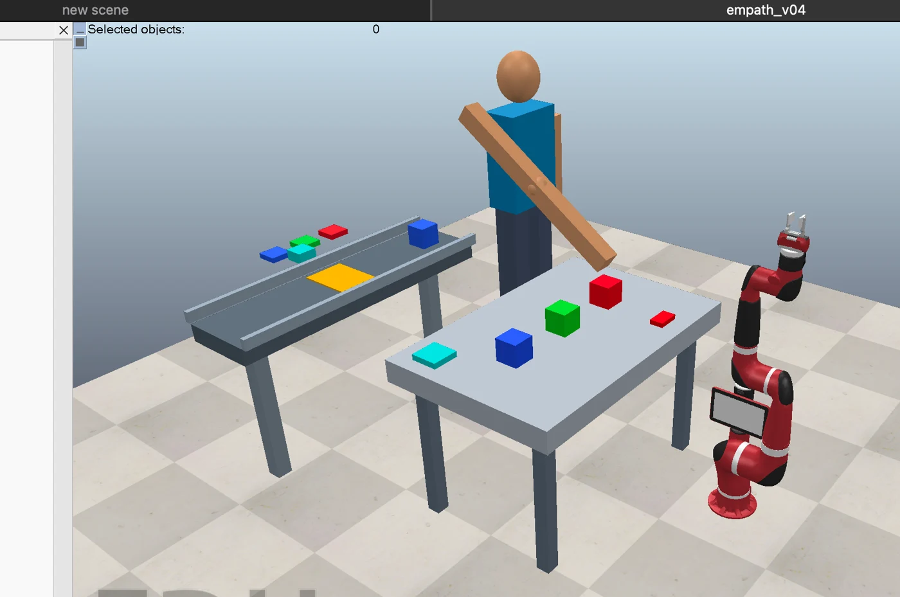
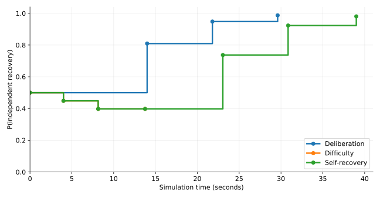
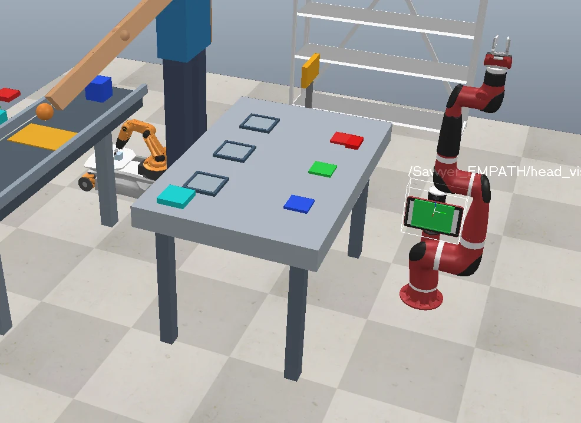
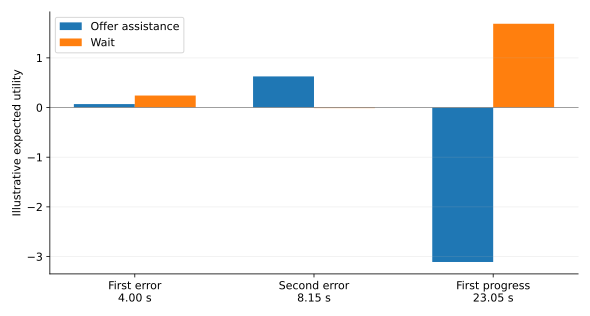
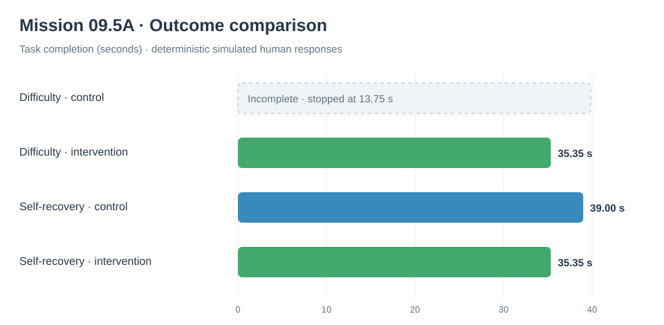

Project EMPATH
Uncertainty-aware assistance in a simulated human–robot assembly workcell. A Sawyer robot observes task behavior, updates a Bayesian belief about independent recovery, and signals when intervention has higher expected utility than waiting.
1. Simulation workcell and experimental setup
The workcell combines a scripted human with an articulated arm, a stepwise conveyor presenting color-coded blocks, three ordered RGB assembly slots, an observing Sawyer manipulator, and a mobile courier. Human selections are animated; the courier transports a completed order after successful assembly. Sawyer's current intervention is visual signaling only, not physical manipulation of the task.

2. Human behavior conditions
Three scripted conditions test whether the controller responds to observable human behavior rather than knowing the scenario outcome beforehand. An incorrect approach means the hand reached toward a nonmatching block; it does not mean the block was grasped or placed.
| Condition | Observable behavior | Progress | Final P(recovery) | Result |
|---|---|---|---|---|
| Deliberation | Waits, ignores initial blue block; assembles red, green, blue | 3/3 | 0.9871 | Task complete (29.60 s) |
| Difficulty | Two incorrect approaches and hesitation; no further progress | 0/3 | 0.3976 | Task incomplete |
| Self-recovery | Same initial two incorrect approaches, then assembles RGB | 3/3 | 0.9806 | Task complete (39.00 s) |
Event log sizes: deliberation 26 rows; difficulty 14 rows; self-recovery 32 rows. The logs are synthetic software-generated trajectories, not recruited participant data.

Critically, difficulty and self-recovery have identical initial observable histories and posterior beliefs through the second incorrect approach (8.15 s). The self-recovery estimate later increases only after actual successful assembly events at 23.05, 30.85, and 39.00 seconds.
3. Live uncertainty-aware assistance
The replay-tested Bayesian monitor was connected to the live simulation clock. After each relevant observation, Sawyer compares the expected utility of OFFER_ASSISTANCE versus WAIT.
In the self-recovery run, the first incorrect approach at 4.00 s prompted WAIT, while the second at 8.15 s prompted OFFER_ASSISTANCE. The decision returned to WAIT when the first correct assembly progress was observed at 23.05 s.


The simulation finished successfully: RGB pattern complete at 39.00 s, order delivered at 53.20 s, and courier returned at 65.10 s. Three CSV files preserve the event history, online Bayesian states, and decisions for this run.
4. Human response to assistance
October 27, 2026 · Paired control and intervention simulations
To extend Sawyer's visual assistance signal into a testable interaction, we introduced a deterministic human-response rule. In the control condition, Sawyer calculates assistance recommendations but does not display an offer. In the intervention condition, the recommended offer is displayed and the scripted human can accept guidance and resume the assembly task.
We ran each condition with two different underlying behaviors: difficulty, in which the human cannot progress without modeled assistance, and self-recovery, in which the human eventually completes the pattern without intervention.
| Human behavior | Condition | Offers / accepted | Completion | Assembly time |
|---|---|---|---|---|
| Difficulty | Control | 0 / 0 | Incomplete (0/3) | Not reached; trial stopped at 13.75 s |
| Difficulty | Intervention, accept | 1 / 1 | Complete (3/3) | 35.35 s |
| Self-recovery | Control | 0 / 0 | Complete (3/3) | 39.00 s |
| Self-recovery | Intervention, accept | 1 / 1 | Complete (3/3) | 35.35 s |

Intervention timing and observed response
In both intervention runs, Sawyer recommended and offered assistance at 8.15 s, after two incorrect reaches. The scripted human saw the offer at 9.75 s, accepted it at 10.25 s, and resumed task activity. Once the first correct block was assembled at 19.55 s, the posterior probability of independent recovery rose to approximately 0.737, and Sawyer's recommendation returned to WAIT.
The paired runs retained matching observable histories and Bayesian beliefs through the second incorrect approach: P(recovery) = 0.397647 at 8.15 s. The control condition suppressed the offer even when the intervention policy recommended assistance.
For self-recovery, accepted guidance reduced the scripted completion time from 39.00 s to 35.35 s, a difference of 3.65 s (approximately 9.4%). For difficulty, the control trial ended incomplete while the accepted-assistance trial completed. These differences follow from the programmed response model and should not be interpreted as effects measured on human participants.
5. Interpretation and limitations
What this establishes: a synchronized, functioning CoppeliaSim prototype linking observable scripted behavior -> Bayesian inference -> decision utility -> a visible Sawyer screen-color response. It also confirms that identical observable prefixes receive identical beliefs.
What it does not establish: emotion recognition, statistically calibrated prediction, actual assistance delivered, or improved outcomes for human participants. Likelihoods and action utilities are currently hand-specified; the human behavior and courier motion are scripted. In Mission 09.5A, the visual offer changes behavior through an explicitly programmed acceptance rule; that is a simulation mechanism, not an observed human response.
6. What's next?
Expand the paired trials with declined offers, interruption delays, varied response probabilities, and repeated seeded simulations. Next, quantify unnecessary interruptions and delayed assistance, validate inference calibration on held-out trajectories, and test robustness across task configurations.
Media can be extended with a dedicated GIF from the live October 17 screen-color run. The current animation depicts an earlier workcell stage.